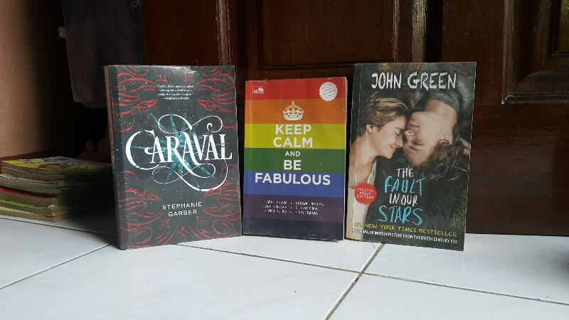
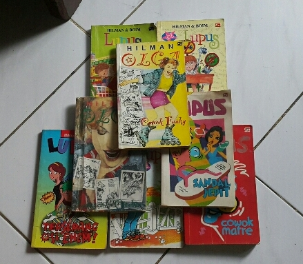
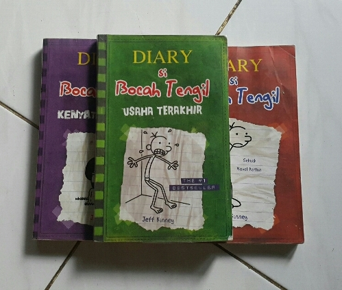
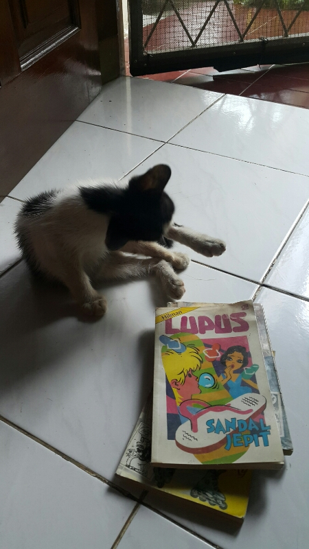
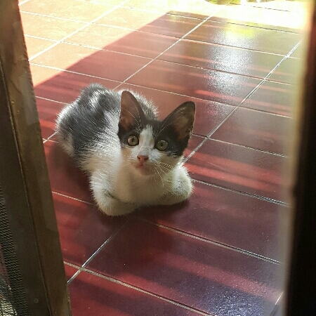
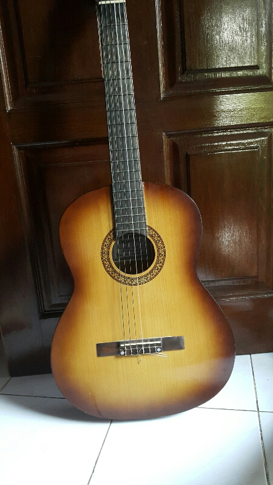
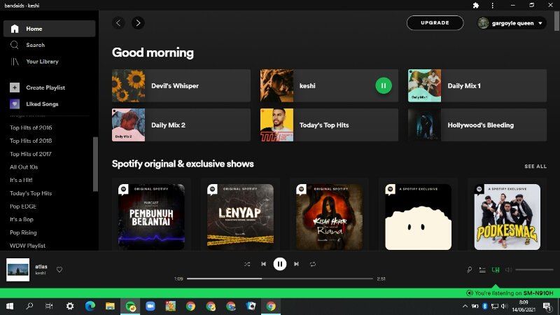
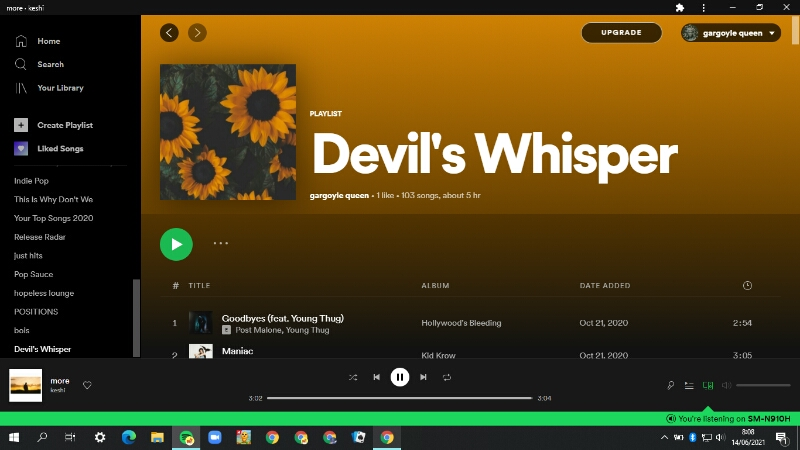
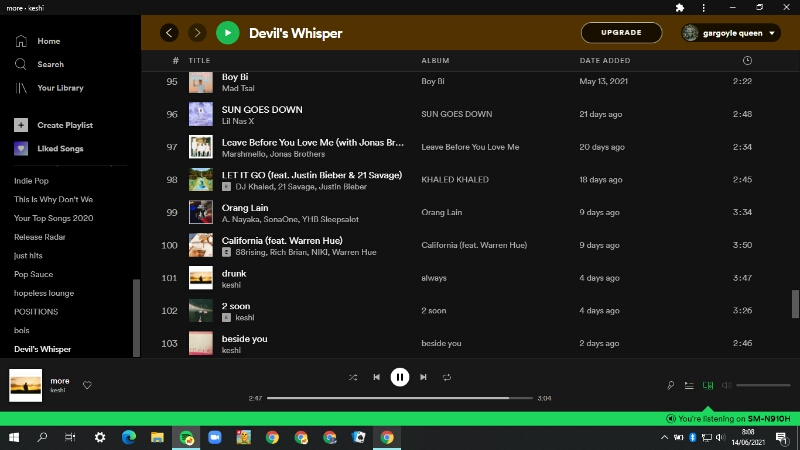
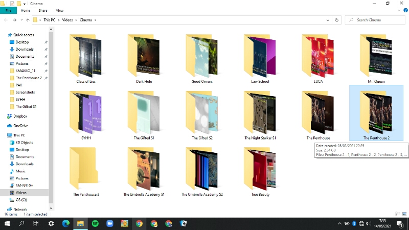

Galeri

Saya suka membaca. Sejak SD saya sering ke perpustakaan setelah selesai belajar.
Lalu seiring waktu saya mencoba untuk membaca novel. Ini adalah beberapa koleksi novel saya.
Tidak banyak memang, karena saya lebih menikmati membaca novela atau novelet.

Serial Lupus dan Olga merupakan terbitan tahun 90-an. Saya suka membacanya karena bergenre
komedi dan cerita sehari-hari. Dari serial ini saya sedikit banyak memahami kehidupan remaja pada tahun 90-an.

Serial ini merupakan karya terjemahan dari bahasa Inggris. Dari buku ini saya belajar bahwa anak/remaja
di belahan bumi manapun mempunyai pola pikir kekanakan yang kurang lebih sama, karena saya cukup
relate dengan
lelucon pada serial tersebut.

Di sebelah buku saya ada seekor anak kucing. Ya, belakangan ini saya punya kesibukan yang baru, yaitu mengurus anak kucing.
Saya menganggapnya sebagai hobi karena saya sangat menikmati mengurus kucing ini. Namanya Pepew, sepertinya dia kucing jantan (masih kecil, kelaminnya belum terlihat jelas).
Setiap hari saya bermain dengannya. Dia masih kecil dan sedang aktif-aktifnya. Dia suka 'menangkap' serangga kecil (lalat, laron).

Ini fotonya yang jelas. Menurut saya dia lucu.

Selain itu saya suka bermain gitar. Kalau ada lagu yang saya suka, saya mencoba untuk mencari kunci gitarnya, lalu saya mainkan.
Gitar ini menjadi hadiah ulang tahun saya yang ke-14



Tiga
screen capture di atas adalah tampilan aplikasi layanan streaming musik saya dan daftar putar favorit saya.
Saya sangat suka mendengar lagu dimanapun kapanpun saya berada. Saat mengerjakan tugas, sebelum tidur, apalagi saat waktu senggang.
Saya cukup mengikuti perkembangan dunia hiburan, terutama dari dunia musik.

Terakhir, adalah hobi terbaru saya yang baru saya tekuni sekitar 8 bulan lalu. Yaitu menonton drama/serial,
baik itu dari Korea Selatan maupun yang berbahasa Inggris. Saya baru mempunyai hobi ini sejak
memakai aplikasi Telegram. Di Telegram banyak kanal gratis yang menyediakan file drama/serial.
Pengunduhannya pun mudah, tidak banyak iklan atau link yang menyulitkan proses pengunduhan.